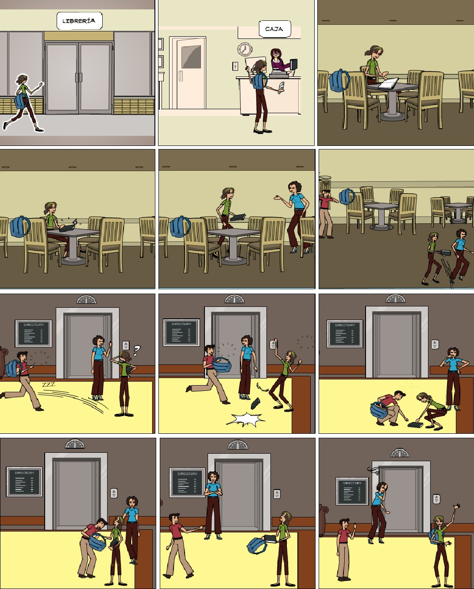

Teste - Parte 2
Grave o que está acotecendo na cena abaixo. Para iniciar, conecte um microfone ao seu computador e aperte o ícone de gravação. Para terminar aperte novamente no ícone.


Grave o que está acotecendo na cena abaixo. Para iniciar, conecte um microfone ao seu computador e aperte o ícone de gravação. Para terminar aperte novamente no ícone.